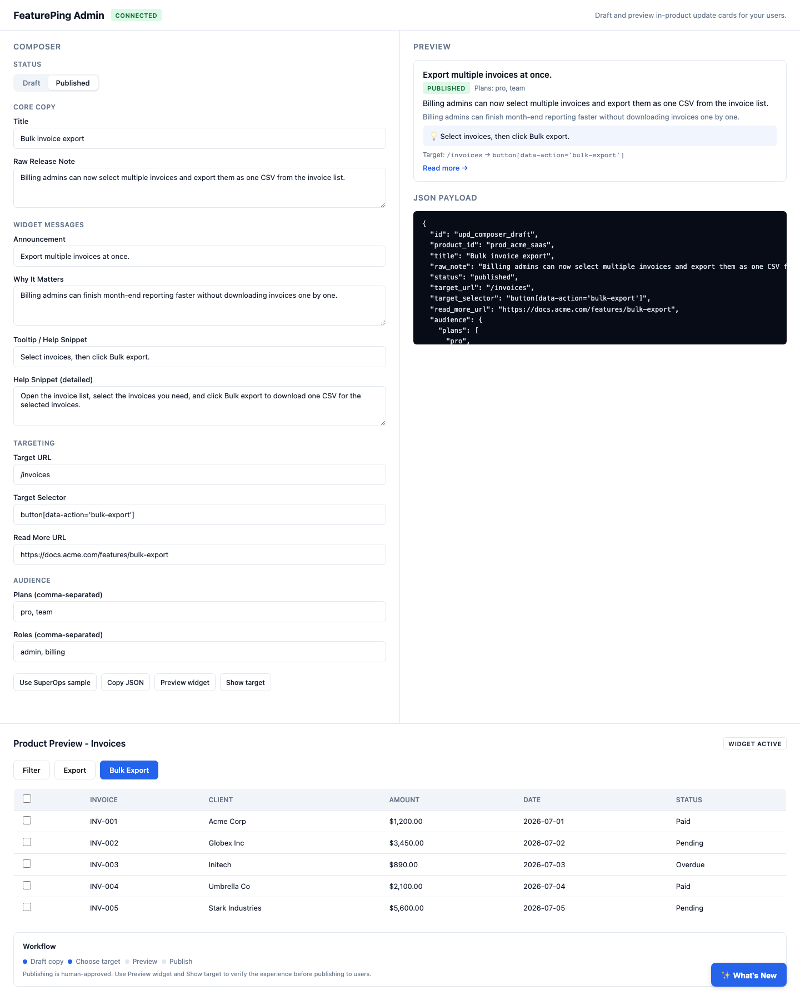
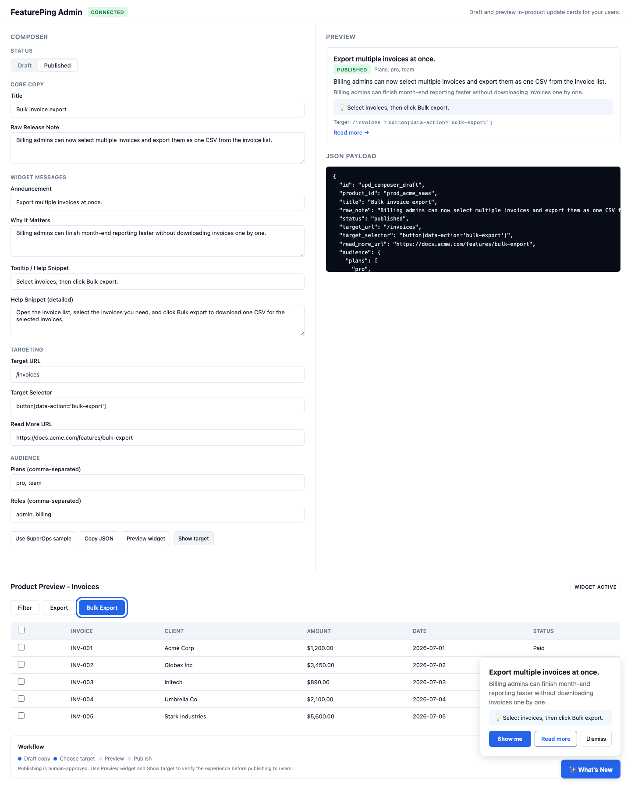

Problem 1
Wrong distance
The release note lives outside the product. The changed workflow lives inside Patch Management, MDM, Tickets, Billing, or Dashboards.
FeaturePing turns a shipped product update into an in-product card, a short explanation, a Show me action, and a Read more bridge back to the full release note.
Windows patches now include Updates and Tools across Approval Matrix, Filters, and Schedule Conditions.
Use Updates and Tools to tune approvals without reading a long monthly post.
SuperOps-style products ship across many surfaces. A monthly forum post records what shipped, but users still need to know if it matters to them and where to use it.
The release note lives outside the product. The changed workflow lives inside Patch Management, MDM, Tickets, Billing, or Dashboards.
A technician, MSP owner, endpoint admin, and billing user should not all receive the same generic update blast.
Even if the user reads the release note, they still ask: where is this, how do I enable it, and is it for my role?
A narrow release education layer: admin composer, update JSON, in-product widget, Show me target highlight, and Read more link.

PM or marketing writes the update, sets audience, target URL, selector, and Read more URL.
The preview shows how users will see the update inside the product before anyone publishes it.
FeaturePing is easy to explain because each team already feels the pain from a different angle. Click each audience.
FeaturePing turns shipped work into visible product value without buying a heavy onboarding platform.
The forum remains the archive. FeaturePing creates smaller in-product cards for the module and user role that cares.
Windows patches now include Updates and Tools. Use them to refine approvals and schedules without scanning the whole monthly release post.
This is not only a concept deck. The repo has the admin flow, widget runtime, schema validation, target highlighter, and screenshots.

Show target verifies the selector before publishing so broken guidance does not reach users.
If FeaturePing gets access to multiple git repos, changelogs, tickets, docs, and route metadata, it can propose update packages. It should still ask before publishing.
Human writes the release, selects target URL, selector, audience, and Read more URL.
Pull from release notes, internal changelog markdown, GitHub releases, PR labels, Linear, Jira, and docs.
Suggest audience, product route, selector, help article, and copy variants with confidence labels.
Build a complete update package from code changes and docs, then send it to PM or marketing for approval.
Report ignored updates, stale selectors, missed adoption, and roles that need follow-up education.
Use this framing when presenting the project to product, marketing, and founder audiences.
It helps SaaS teams explain what changed, guide users to the exact feature, and connect back to the full release note or help article.
One SuperOps release note can become different contextual cards for Patch Management, MDM, Tickets, Billing, and Dashboards.
Do not claim fully automatic release detection or customer-facing auto-publish. The correct promise is AI-assisted, human-approved release communication with guided in-product action.
Release notes are a record. FeaturePing is a prompt at the moment of use. It reduces the distance between knowing something shipped and trying it.
The wedge is narrower: shipped update to contextual explanation to Show me. That keeps the MVP small and avoids competing head-on with large DAP products.